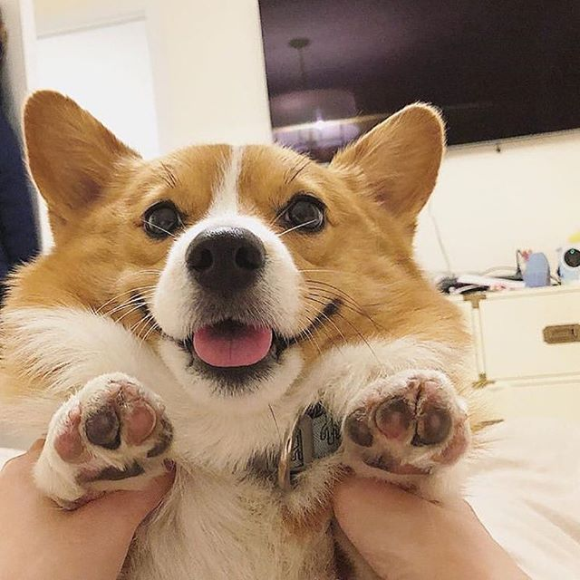

This Website is
awesome 
This Website has some subtext that goes here under the
main title. It's a smaller font and the color is smaller contrast
This Website has some subtext that goes here under the
main title. It's a smaller font and the color is smaller contrast

Penso, logo existo. Ou penso, pois existo? O que existe, nós ou nossos pensamentos? Talvez nós não estejamos aqui, apenas nossas mentes criando um mundo irreal para o nosso entretenimento, talvez eu seja fruto de sua imaginação, ou talvez você e eu sejamos um fruto da imaginação alheia. Nos questionamos o tempo todo sobre diversas coisas, mas raramente paramos para pensar por que estamos aqui e por que vivemos e sofremos... Devemos nos perguntar? Não sei, mas mesmo assim eu pergunto, mesmo sem obter as respostas. Eu pergunto, e mesmo sem saber o porquê das perguntas, me pergunto, por que? Eu não sei, não sei...